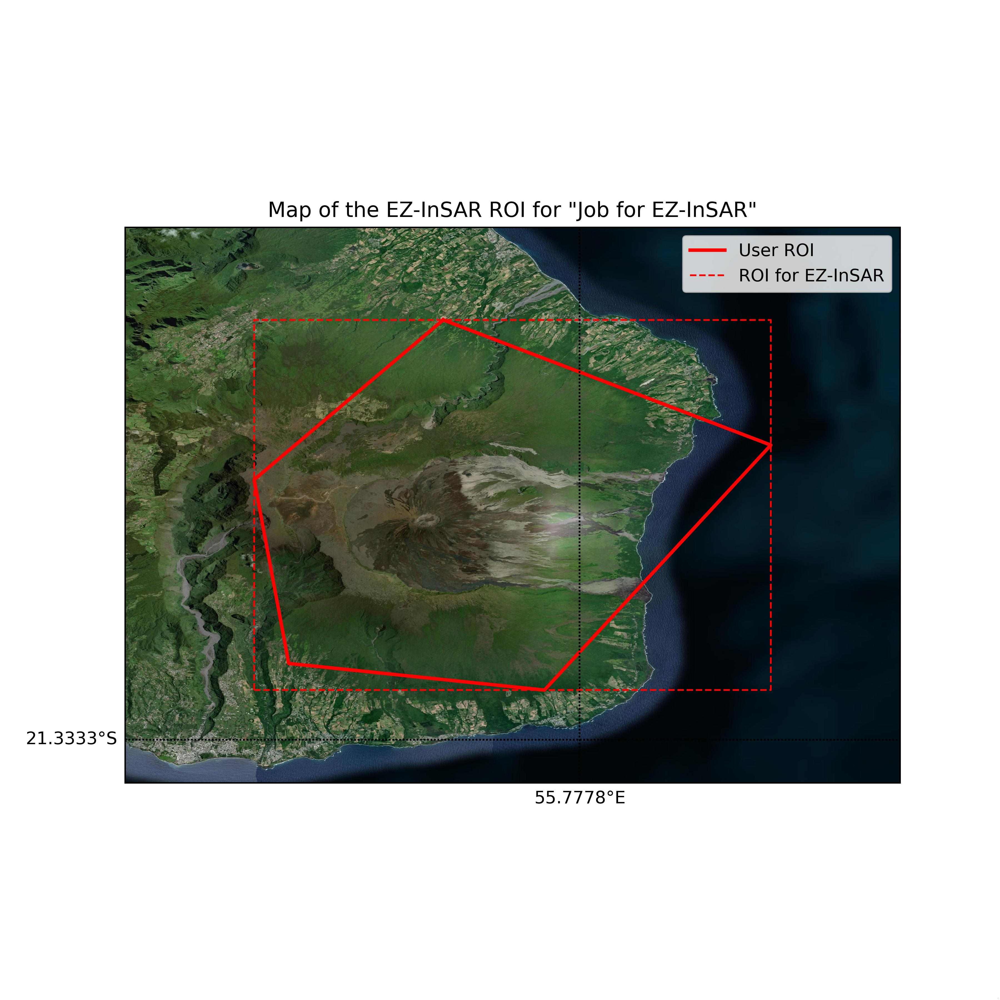
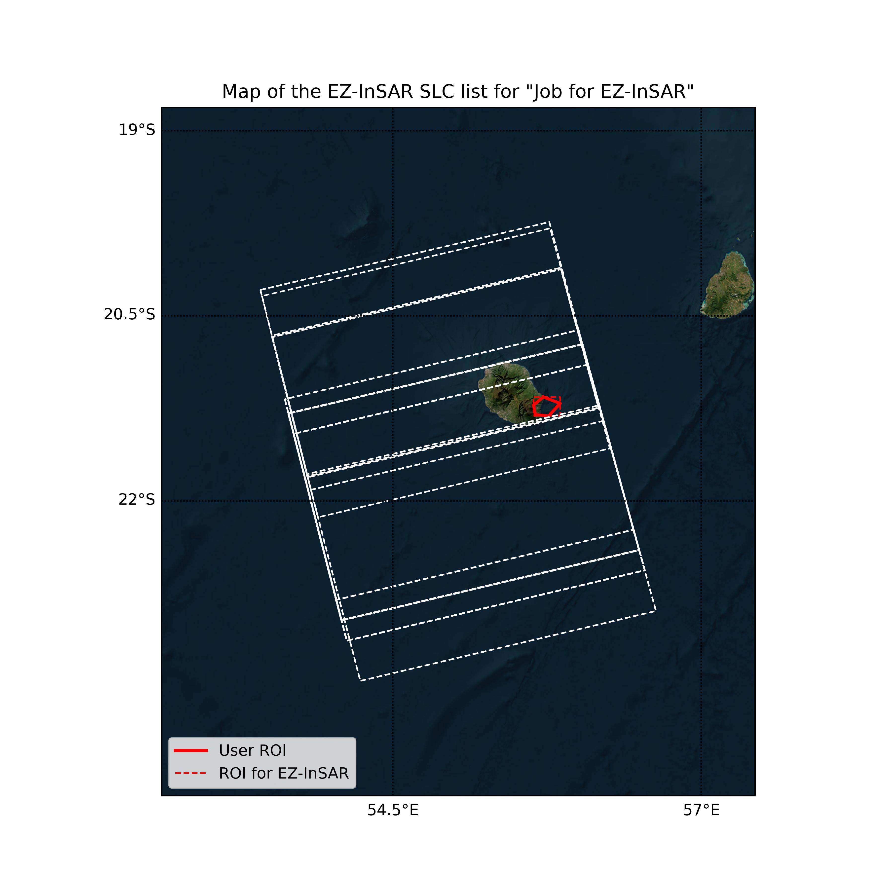

Management of Sentinel-1 images via Python scripts
[ ]:
#! /usr/bin/env python3
# -*- coding: iso-8859-1 -*-
__docformat__ = "plaintext"
[ ]:
## Import the required Python packages
from datetime import datetime # Datetime pakage
import ezinsar.job as ez # EZ-InSAR package
import os
1. Initialiation of the EZ-InSAR job
The first step is the initialiation of an EZ-InSAR job. Of course, it is possible to define some parameters:
we want to use both polarisations available with Sentinel-1 data: VV and VH;
we decide to use the default acquisition mode of Sentinel-1: IW;
we decide to active the verbose;
and we also decide to save the log into the ezinsarexample.log file.
The Sentinel-1 satellites are selected by default.
[ ]:
job = ez.EIjob(verbose=True,polarisation=['VV','VH'],satmode='IW')
However, we need to define some parameters: i.e., the different directory paths and the dates.
[ ]:
# Path directory modifications
job.workdirectory = os.path.abspath('../example1/WKtest')
job.pathSLC = os.path.abspath('../example1/WKtest/Data_slc')
job.pathorbit = os.path.abspath('../example1/WKtest/Data_orbit')
job.pathaux = os.path.abspath('../example1/WKtest/Data_aux')
# Date defintion
job.date1 = datetime.strptime('2014-10-01T00:00:00.000000Z','%Y-%m-%dT%H:%M:%S.%fZ')
job.date2 = datetime.strptime('2024-12-31T00:00:00.000000Z','%Y-%m-%dT%H:%M:%S.%fZ')
To avoid any mistakes or errors, the full set of parameters can be displayed and checked by using the method check().
It also is possible to display the parameters by using the method print().
[ ]:
# Print the parameters
job.print()
# Display and check the parameters
job.check()
The warnings should be carefully checked because they could be errors during the next steps.
2. Import the ROI
EZ-InSAR requires a ROI (Region of Interest). Of course, the user has several options to define this parameter. They can use:
a shapefile (in Polygon mode);
a string variable (i.e., W,S,N,E) in EPGS:4326;
a shapely Polygon.
Here the first option will be used.
[ ]:
# Import the ROI on the Piton de la Fournaise volcano
job.importroi(input='ROI_PdF.shp')
We can display the ROI by using the method displayroi(). Here, the figure will be saved because the figure option is given.
[ ]:
job.displayroi(figure='fig1_example1.jpg',verbose=False)

3. Creation of the directories
Users can used the next method to create the required directories.
[ ]:
job.mkdir()
4. Selection of relative orbits and directions
For Sentinel-1, it needs to define the relative orbit and the pass direction (ascending or descending) in order to select the desired SAR data. Users have two options:
the use of the sub-package s1iwburstIDapp to automatically detect the best parameters;
a manual selection.
[ ]:
## For a manual selection, we directly affect the values into the EZ-InSAR job.
job.relorbit = 144
job.satpass = 'ASCENDING'
[ ]:
## For an automatic selection
# We import the application
from ezinsar.eicomponents.sensor.s1module import s1iwburstIDapp
# We create a "selection" job
jobS1selection = s1iwburstIDapp.s1iwburstIDapp()
# We check if the S1 ID map is downloaded and available
jobS1selection.S1burstIDmap()
######################################################
# For the following step, the EZ-InSAR job is required
######################################################
# We detect the burst ID
jobS1selection.detectfromIDmap(job,verbose=True)
# We analyse the results to find the best options
job.relorbit, job.satpass, res = jobS1selection.analyse(job)
# Of course, it is possible to merge the methods:
# job.relorbit, job.satpass, res = s1iwburstIDapp().S1burstIDmap().detectfromIDmap(job,verbose=True).analyse(job)
5. Create the SLC list
To generate the SLC list, EZ-InSAR offers three methods:
EZ-InSAR can find the available images from two different servers: ASF and Copernicus. By default, the Copernicus server will be used. The server allows to select the server. This option is only available for Sentinel-1.
EZ-InSAR can detect the SLCs stored in the directory (given by the pathSLC attribute). For Sentinel-1, the directory should contains .zip and/or .SAFE files.
EZ-InSAR can read a EZ-InSAR SLC list.
## If users want to use the SLC directory:
job.initiateSLC(mode='onfile',verbose=True)
## If users want to use a SLC list:
job.initiateSLC(mode='list',file='slclist.list.csv',verbose=True)
Here, we decide to use the online mode:
[ ]:
job.initiateSLC(mode='online',verbose=True)
And we save the SLC list:
[ ]:
job.saveSLClist(file='slclist_example1.csv')
[5]:
import pandas as pd
df = pd.read_csv("slclist_example1.csv")
df.head(10)
[5]:
| Name | Date1 | Date2 | Platform | Mode | Orbit | RelativeOrbit | PolyFrame | OrbitDirection | ProcessingLevel | Polarisation1 | Polarisation2 | Polarisation3 | Polarisation4 | Server | Url | Status | SizeMB | Stored | Processed | |
|---|---|---|---|---|---|---|---|---|---|---|---|---|---|---|---|---|---|---|---|---|
| 0 | S1A_IW_SLC__1SDV_20220506T145307_20220506T1453... | 2022-05-06T14:53:07.277Z | 2022-05-06T14:53:35.163Z | S1A | IW | 43091 | 144 | POLYGON ((53.656628 -21.291651, 54.086018 -22.... | ASCENDING | SLC | VV | VH | NaN | NaN | Copernicus | https://catalogue.dataspace.copernicus.eu/down... | ONLINE | 0.0 | False | False |
| 1 | S1A_IW_SLC__1SDV_20220424T145307_20220424T1453... | 2022-04-24T14:53:07.100Z | 2022-04-24T14:53:34.987Z | S1A | IW | 42916 | 144 | POLYGON ((53.654499 -21.291836, 54.083916 -22.... | ASCENDING | SLC | VV | VH | NaN | NaN | Copernicus | https://catalogue.dataspace.copernicus.eu/down... | ONLINE | 0.0 | False | False |
| 2 | S1A_IW_SLC__1SDV_20220412T145306_20220412T1453... | 2022-04-12T14:53:06.220Z | 2022-04-12T14:53:34.103Z | S1A | IW | 42741 | 144 | POLYGON ((53.655212 -21.292917, 54.084541 -22.... | ASCENDING | SLC | VV | VH | NaN | NaN | Copernicus | https://catalogue.dataspace.copernicus.eu/down... | ONLINE | 0.0 | False | False |
| 3 | S1A_IW_SLC__1SDV_20220331T145305_20220331T1453... | 2022-03-31T14:53:05.968Z | 2022-03-31T14:53:33.855Z | S1A | IW | 42566 | 144 | POLYGON ((53.654209 -21.292057, 54.083591 -22.... | ASCENDING | SLC | VV | VH | NaN | NaN | Copernicus | https://catalogue.dataspace.copernicus.eu/down... | ONLINE | 0.0 | False | False |
| 4 | S1A_IW_SLC__1SDV_20220319T145305_20220319T1453... | 2022-03-19T14:53:05.800Z | 2022-03-19T14:53:33.681Z | S1A | IW | 42391 | 144 | POLYGON ((53.654175 -21.293095, 54.083492 -22.... | ASCENDING | SLC | VV | VH | NaN | NaN | Copernicus | https://catalogue.dataspace.copernicus.eu/down... | ONLINE | 0.0 | False | False |
| 5 | S1A_IW_SLC__1SDV_20220307T145305_20220307T1453... | 2022-03-07T14:53:05.634Z | 2022-03-07T14:53:33.516Z | S1A | IW | 42216 | 144 | POLYGON ((53.654926 -21.292032, 54.084278 -22.... | ASCENDING | SLC | VV | VH | NaN | NaN | Copernicus | https://catalogue.dataspace.copernicus.eu/down... | ONLINE | 0.0 | False | False |
| 6 | S1A_IW_SLC__1SDV_20220223T145305_20220223T1453... | 2022-02-23T14:53:05.830Z | 2022-02-23T14:53:33.721Z | S1A | IW | 42041 | 144 | POLYGON ((53.654953 -21.291512, 54.08448 -22.9... | ASCENDING | SLC | VV | VH | NaN | NaN | Copernicus | https://catalogue.dataspace.copernicus.eu/down... | ONLINE | 0.0 | False | False |
| 7 | S1A_IW_SLC__1SDV_20220211T145305_20220211T1453... | 2022-02-11T14:53:05.933Z | 2022-02-11T14:53:33.817Z | S1A | IW | 41866 | 144 | POLYGON ((53.655411 -21.292044, 54.084805 -22.... | ASCENDING | SLC | VV | VH | NaN | NaN | Copernicus | https://catalogue.dataspace.copernicus.eu/down... | ONLINE | 0.0 | False | False |
| 8 | S1A_IW_SLC__1SDV_20220130T145306_20220130T1453... | 2022-01-30T14:53:06.073Z | 2022-01-30T14:53:33.962Z | S1A | IW | 41691 | 144 | POLYGON ((53.655602 -21.291559, 54.085064 -22.... | ASCENDING | SLC | VV | VH | NaN | NaN | Copernicus | https://catalogue.dataspace.copernicus.eu/down... | ONLINE | 0.0 | False | False |
| 9 | S1A_IW_SLC__1SDV_20220118T145306_20220118T1453... | 2022-01-18T14:53:06.516Z | 2022-01-18T14:53:34.408Z | S1A | IW | 41516 | 144 | POLYGON ((53.655819 -21.292294, 54.085327 -22.... | ASCENDING | SLC | VV | VH | NaN | NaN | Copernicus | https://catalogue.dataspace.copernicus.eu/down... | ONLINE | 0.0 | False | False |
EZ-InSAR contains several methods to check and print the SLC list.
[ ]:
job.checkSLClist()
[ ]:
job.printSLClist()
The displaySLClist() method can generate this map of SLC extents.
TIPS: If the SLCs are not downloaded, the extents of SLCs will be displayed. However, it is possible to display the bursts if EZ-InSAR detects downloaded SLCs.
[ ]:
## Create the map and save it into a file:
job.displaySLClist(figure='fig2_example1.jpg')

For the Google-Earth users, the SLC list can be saved into a .kmz file.
[ ]:
job.writeSLClisttokmz(file='example1.kmz')
6. Download the SLCs and orbits
From the EZ-InSAR job, users can download the SLCs and the orbits.
[ ]:
## To download the SLCs:
job.downloadSLC(username='test',password="test")
[ ]:
## To download the orbits:
job.downloadorbit(username='test',password="test")
The priorities are:
the use of precise orbits;
the use of restitued orbits;
the use of orbits which can be found inside the .zip (or .SAFE) files.
7. Save the job
Finally, we an decide to save the job.
[ ]:
## Save the EZ-InSAR job:
ez.save(job,'example1.ei')